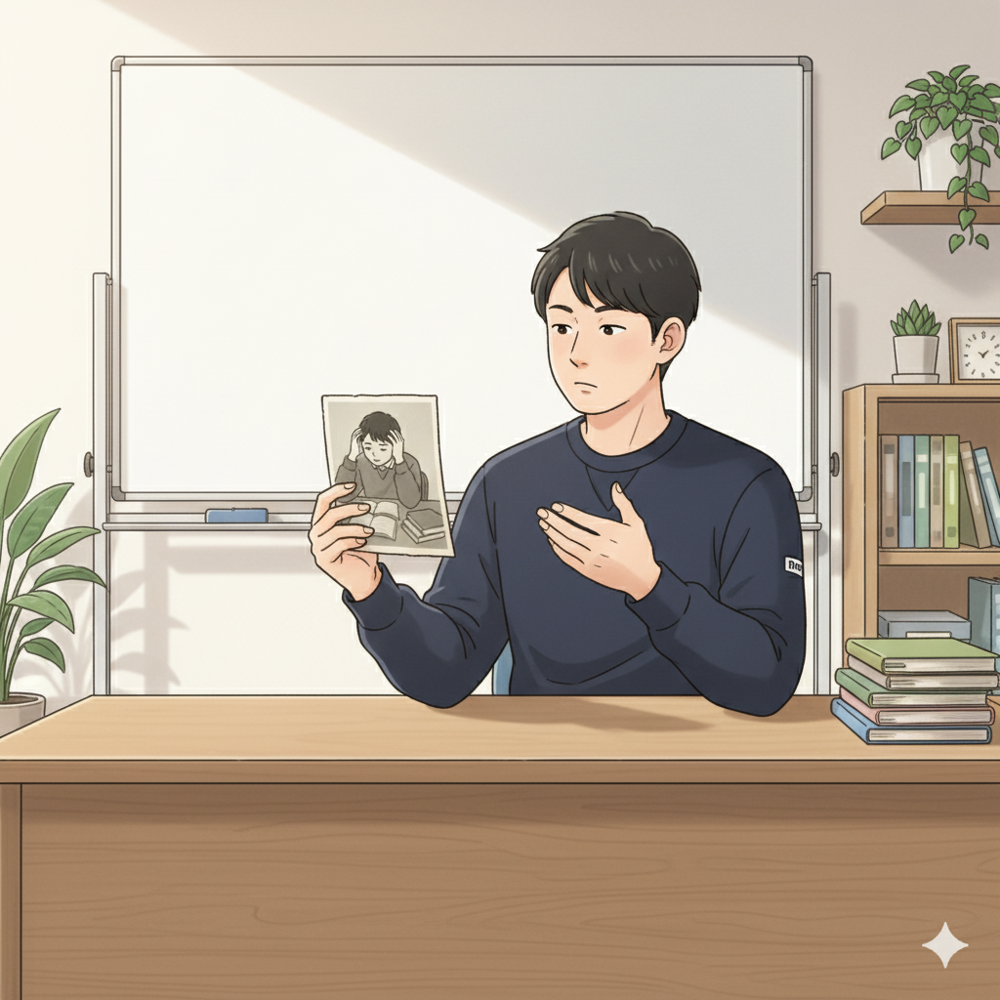
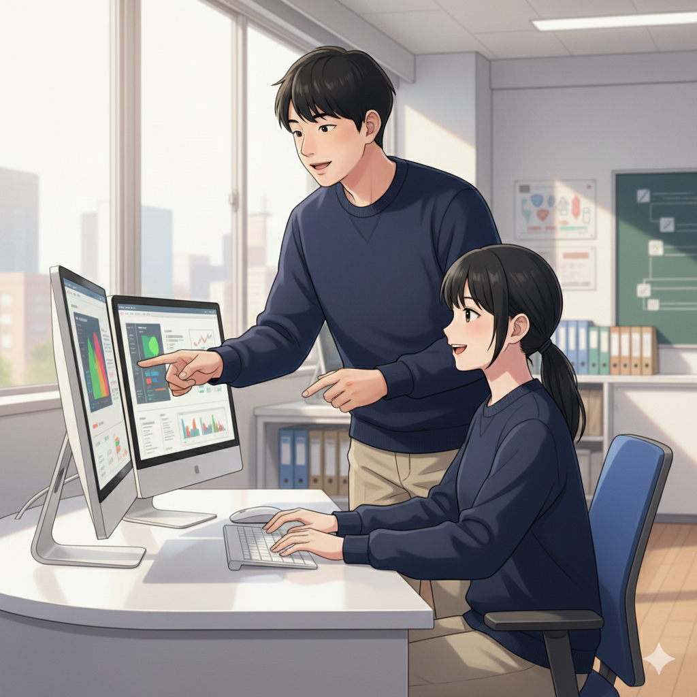

「できない」から「できる！」へ。僕の原点（塾長）

皆さん、こんにちは！if塾塾長の山﨑です。実は僕、中学時代はADHDとASDの診断を受け、特別支援学級に通っていました。当時は「どうせ自分には無理だ…」と諦めかけていたんです。忘れもしない、授業についていけず、周りの子たちとの違いに落ち込んでいた日々。宿題もまともにできず、親にも迷惑ばかりかけていました。
でも、そんな僕の人生を変えた出会いがありました。それが、if塾の塾頭です。塾頭は、僕の特性を『障害』ではなく『才能の原石』として見てくれたんです。そして、僕が興味を持っていたプログラミングをICT教材を使って教えてくれました。最初は全然分からなかったのですが、塾頭は根気強く、僕のペースに合わせて教えてくれました。
少しずつコードが書けるようになり、簡単なゲームを作れるようになった時、初めて「自分にもできるんだ！」という達成感を味わいました。これが僕の人生を変える第一歩だったんです。
才能開花のきっかけは、ICTと小さな成功体験（塾頭）
塾頭です。山﨑塾長との出会いは、私が特別支援教育の現場でICT教材を活用し始めた頃でした。彼は、集中力にムラがあったり、一つのことに没頭しすぎたりする特性がありましたが、プログラミングに関しては目を見張る集中力と発想力を持っていました。そこで、彼の特性を活かすために、ICT教材を使い、彼のペースに合わせてプログラミングを教えることにしました。
重要なのは、小さな成功体験を積み重ねていくこと。簡単な課題をクリアするたびに、彼を褒め、自信を持たせるように心がけました。また、彼が興味を持つテーマ（例えば、好きなゲームのキャラクターを動かすなど）を教材に取り入れることで、モチベーションを維持できるように工夫しました。
発達障害を持つ子どもたちは、得意なことと苦手なことの差が大きいことが多いです。だからこそ、彼らの才能を見つけ、それを伸ばすための環境を用意することが大切だと考えています。if塾では、一人ひとりの特性に合わせたICT教育を提供し、彼らの才能を開花させるお手伝いをしています。
例えば、eスポーツに興味があるY君は、その並外れた集中力と戦略的思考を活かし、プロゲーマーを目指しています。学生起業家の加賀屋結眞君は、独創的なアイデアと行動力で、すでに社会に貢献する事業を立ち上げています。彼らもまた、if塾で出会い、自分の才能を磨き、夢に向かって進んでいます。
国立大学進学、そしてif塾へ。恩返しがしたい（塾長）

高校に進学してからも、塾頭のサポートを受けながらプログラミングの勉強を続けました。そして、ついに国立大学の工学部に合格することができたんです！あの時の喜びは、今でも忘れられません。
大学では、AIやデータサイエンスについて学びました。そして、学んだ知識を活かして、発達障害を持つ子どもたちの学習を支援するAI教材を開発したいと考えるようになりました。そんな時、塾頭から「一緒にif塾を立ち上げないか？」と誘われたんです。僕は二つ返事でOKしました。塾頭への恩返しがしたい、そして、僕と同じように苦しんでいる子どもたちの力になりたい。それが僕の原動力です。
if塾では、僕自身の経験を活かして、子どもたちに寄り添い、彼らの才能を見つけるお手伝いをしています。ADHDやASDの特性は、決して「障害」ではありません。適切なサポートがあれば、「才能」に変わる可能性を秘めているんです。僕自身がその証拠です。
もしあなたが、今、不安や悩みを抱えているなら、ぜひif塾に相談してみてください。僕たちは、あなたの可能性を信じています。
特性を活かして自分らしい成長を（塾頭）
if塾は、発達特性を持つ子どもたちが、ICT教育を通して自分らしい成長を遂げるための場所です。私たちは、子どもたちの「好き」を大切にし、それを才能に変えるためのサポートを惜しみません。
Y君は、eスポーツを通じて培った集中力と戦略的思考を、プログラミングに応用しています。加賀屋結眞君は、自身の経験から生まれたアイデアを、ICTを活用して形にしています。CTOの井上陽斗君は、幼い頃からプログラミングに没頭し、その才能を活かしてif塾のシステム開発を支えています。
彼らのように、発達特性を持つ子どもたちは、秘めたる可能性をたくさん持っています。if塾は、その可能性を開花させ、社会で活躍できる人材を育成することを目指しています。もし、お子様のことでお悩みでしたら、お気軽にご相談ください。私たちは、共に考え、共に成長していくことをお約束します。
if塾で、あなただけの「才能」を見つけてみませんか？
🎯 興味を持っていただいた方へ
if塾では、発達特性を持つ子どもたちの「好き」を「才能」に変える教育を行っています。現在の記事内容と実際の活動に大きなズレはありませんが、詳細については直接お問い合わせください。
📌 記事について
この記事は、塾頭による完全自動化への挑戦としてAIが自動生成しています。将来的には塾頭が執筆しているような記事になることを目指しており、現時点では事実と異なる内容が含まれる可能性があります。最新の正確な情報については、お問い合わせフォームよりご確認ください。
🤖 Generated with AI - if塾のブログ自動化プロジェクト